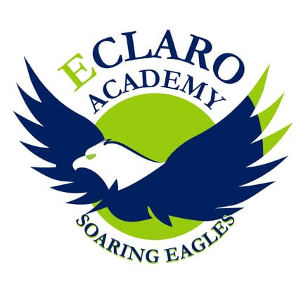

QCU Academic OS — Study Guide Portal
A static portal for my own QCU BSIT study guides — sidebar library, in-page viewer, and an optional AI panel that answers questions about whichever guide is open.
HTML · CSS · JS Karl Ian Galarido
Karl Ian Galarido

1st Year BSIT-1D · Quezon City University
Web Systems and Technologies 1 (WS101) student page — built with hand-written HTML and CSS, no frameworks, no JavaScript.
A quick introduction, plus the facts someone checking this activity would want.
I'm a first-year BSIT student at Quezon City University, currently focused on building a solid foundation in my major program subjects — Introduction to Computing (CC101), Fundamentals of Programming (CC102), and Web Systems and Technologies 1 (WS101) — with the goal of not failing a single one of them. Outside of coursework, I'm generally curious about technology and enjoy learning how things work under the hood.
Currently Playing
To be an internationally recognized local university committed to innovation and sustainability to achieve positive social impact.
To provide a comprehensive education that enhances the lives of QCU students for nation building and as world citizens.
Honors first, full official grades underneath — click a grade level to expand its report card.

Eclaro Academy · Grade 12| Learning Area | Q1 | Q2 | Q3 | Q4 | Final |
|---|---|---|---|---|---|
| Filipino 10 | 92 | 96 | 94 | 95 | 94 |
| English 10 | 90 | 92 | 93 | 96 | 93 |
| Mathematics 10 | 92 | 94 | 95 | 96 | 94 |
| Science 10 | 92 | 93 | 93 | 93 | 93 |
| Araling Panlipunan 10 | 89 | 95 | 97 | 98 | 95 |
| Edukasyon sa Pagpapakatao 10 | 92 | 90 | 91 | 94 | 92 |
| Technology & Livelihood Education 10 | 86 | 89 | 93 | 93 | 90 |
| MAPEH 10 | 87 | 89 | 92 | 96 | 91 |
| General Average | 93 | ||||
| Subject | 1st Qtr | 2nd Qtr | Final |
|---|---|---|---|
| Core | |||
| Oral Communication in Context | 96 | 97 | 97 |
| Komunikasyon at Pananaliksik sa Wika at Kulturang Pilipino | 94 | 96 | 95 |
| General Mathematics | 93 | 95 | 94 |
| Earth Science | 91 | 94 | 93 |
| Personal Development | 92 | 94 | 93 |
| Introduction to the Philosophy of the Human Person | 89 | 94 | 92 |
| Physical Education and Health I | 96 | 97 | 97 |
| Applied & Specialized | |||
| General Biology I | 82 | 91 | 87 |
| Pre-Calculus | 90 | 94 | 92 |
| General Average for the Semester | 93 | ||
| Subject | 3rd Qtr | 4th Qtr | Final |
|---|---|---|---|
| Core | |||
| Reading and Writing | 95 | 95 | 95 |
| Pagbasa at Pagsusuri ng Iba't-Ibang Teksto tungo sa Pananaliksik | 94 | 94 | 94 |
| Statistics and Probability | 94 | 83 | 89 |
| Contemporary Philippine Arts from the Region | 91 | 95 | 93 |
| Physical Education and Health II | 97 | 98 | 98 |
| Applied & Specialized | |||
| Empowerment Technologies | 94 | 94 | 94 |
| Research 1 | 94 | 94 | 94 |
| General Physics I | 94 | 97 | 96 |
| General Chemistry I | 96 | 96 | 96 |
| General Average for the Semester | 94 | ||
| Subject | 1st Qtr | 2nd Qtr | Final |
|---|---|---|---|
| Core | |||
| 21st Century Literature from Philippines and World | 97 | 98 | 98 |
| Media and Information Literacy | 91 | 91 | 91 |
| General Physics II | 90 | 92 | 91 |
| Physical Education III | 98 | 98 | 98 |
| Applied & Specialized | |||
| Research 2 | 95 | 98 | 97 |
| Pagsulat sa Filipino sa Larangan ng Tech-Voc | 95 | 95 | 95 |
| Entrepreneurship | 94 | 95 | 95 |
| General Chemistry II | 83 | 83 | 83 |
| Disaster Risk Reduction and Management | 94 | 96 | 95 |
| General Average for the Semester | 94 | ||
| Subject | 3rd Qtr | 4th Qtr | Final |
|---|---|---|---|
| Core | |||
| Understanding Culture, Society and Politics | 95 | 96 | 96 |
| Physical Education IV | 98 | 98 | 98 |
| Applied | |||
| English for Academic and Professional Purposes | 98 | 98 | 98 |
| Inquiries, Investigation & Immersion | 96 | 97 | 97 |
| Specialized | |||
| General Biology II | 98 | 97 | 98 |
| Basic Calculus | 91 | 94 | 93 |
| Work Immersion | 96 | 97 | 97 |
| General Average for the Semester | 97 | ||
A few things I've built outside of coursework — all plain HTML/CSS/JS, no frameworks, hosted free on GitHub Pages. Built experimentally with AI assistance turning my ideas into working code — some sessions ran long chasing context/token limits before a feature was finished. This WS101 page had AI help too, more than the "experimental" label above suggests.
A static portal for my own QCU BSIT study guides — sidebar library, in-page viewer, and an optional AI panel that answers questions about whichever guide is open.
HTML · CSS · JSA web calculator with a standard keypad mode (arithmetic, scientific, unit/currency conversion) and an "Ask AI" mode for plain-language math questions.
HTML · CSS · JSA beginner-friendly field guide for running a full Linux desktop on Android inside a PRoot container — prerequisites, install steps, and known device limits.
HTML · CSSBoth of mine lean the same direction: rain, and the outdoors.
Fill out the short form, or just use one of the links directly.